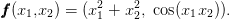
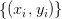

A.2 Elementos da linguagem
Python é uma linguagem de alto nível, interpretada e dinâmica. Uma variável é criada quando um valor é atribuído a ela. Por exemplo:
>>> y = x * 2.0
a variável x recebe o valor int  e, logo após, na segunda linha de comando, a
variável y recebe o valor double  . Observamos que o símbolo = significa o
operador de atribuição não o de igualdade. O operador lógico de igualdade no
Python é ==. Veja os seguintes comandos:
. Observamos que o símbolo = significa o
operador de atribuição não o de igualdade. O operador lógico de igualdade no
Python é ==. Veja os seguintes comandos:
(1, 2.0)
>>> type(x), type(y)
(<type ’int’>, <type ’float’>)
Comentários e continuação de linha de comando são usados como no seguinte exemplo:
...
>>> x = 1 \
... + 2
>>> print(x)
3
A.2.1 Operações matemáticas elementares
Em Python, os operadores matemáticos elementares são os seguintes:
- subtração
* multiplicação
/ divisão
** potenciação
Atenção, a operação de divisão se comporta diferente nas versões Python 2.7 e Python 3. Em Python 3, temos:
0.5
Já, em Python 2.7:
0
>>> from __future__ import division
>>> 1/2
0.5
A.2.2 Funções e constantes elementares
Várias funções e constantes elementares estão disponíveis no pacote módulo Python math. Por exemplo:
>>> math.cos(pi)
-1.0
>>> math.exp(1)
2.718281828459045
>>> math.log(math.exp(1))
1.0
Observamos que math.log é a função logarítmo natural, i.e. ,
enquanto que a implementação Python de  é:
é:
1.0
Veja mais na documentação do módulo math:
A.2.3 Operadores lógicos
Em Python, o valor lógico verdadeiro é escrito como True e o valor lógico falso como False. Temos os seguintes operadores lógicos disponíveis:
or ou lógico
not negação
== igualdade
!= diferente
< menor que
> maior que
<= menor ou igual que
>= maior ou igual que
 , então
, então  é maior ou igual a 1 e menor que 3?
é maior ou igual a 1 e menor que 3?
Solução. Em Python, temos:
>>> (x >= 1) and (x < 3)
True

* As versões do livro disponíveis no site podem estar desatualizadas, veja a versão PDF atual no repositório GitHub oficial do projeto.
- IME - UFRGS